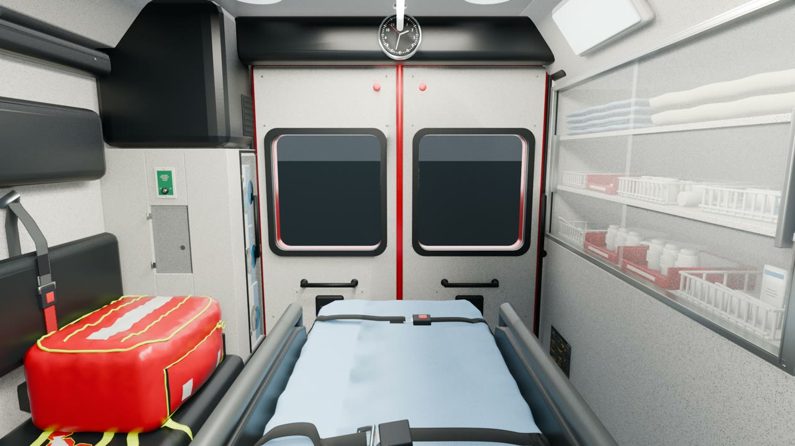

An interactive interior reconstruction
Inside the
ambulance.
Explore a reconstructed ambulance cabin. Open doors, release belts, retrieve supplies, and reconnect the equipment around you.

See how it responds.
Watch the full 37-second sequence, or choose an interaction. Every film keeps the surrounding cabin in view.
Rendered in Blender. Use the browser demo above to interact freely; these films show recorded sequences.Choose an interaction ↑
Open up the scene.
The current cabin and its rendered interactions, organized as one master scene and six editable timelines.
The reconstructed interior
Inspect the cabin, materials and equipment. The master scene contains the updated doors, connected belts and anchored nets used in this release.
Replay, inspect, render
Each interaction has its own editable Blender timeline. Open the repository guide to access the scene files.
The browser uses simplified interactions for responsive play. The Blender timelines reproduce those recorded movements, including controlled belt and net deformation; they are editable recordings, not a new cloth simulation.
One project. A clear place to start.
The release guide brings the demo, Blender scenes and films together. Earlier reconstruction and testing work remains in the repository archive.